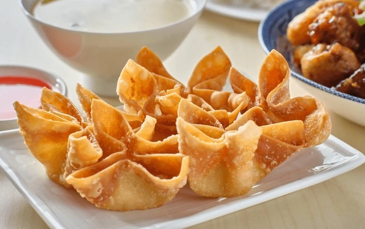

Home
Crab Rangoons

Description
Crab Rangoon, sometimes called crab puffs, crab rangoon puffs, crab ragoons, cheese wontons, or cream cheese rangoons, are filled crisp dumpling appetizers served primarily in American Chinese restaurants.
Ingredients
- 2 (8 ounce) packages cream cheese, softened
- 1 pound crabmeat, shredded
- 3 tablespoons dark soy sauce
- 1 teaspoon minced fresh ginger root
- 1/2 teaspoon chopped fresh cilantro
- 1/2 teaspoon dried parsley
- 1/2 teaspoon minced garlic
- 1 (14 ounce) package small won ton wrappers
- 1 quart oil for frying
Steps
- Mix cream cheese, crabmeat, soy sauce, ginger, cilantro, parsley, and garlic together in a bowl.
- Heat oil in a large heavy skillet or deep fryer to 360 degrees F (180 degrees C).
- While the oil is heating, place 1/2 to 1 teaspoon cream cheese mixture into the center of a wonton wrapper. Moisten the wrapper edges and pull two corners together over filling to make a triangle. Pull two remaining corners up to join them, then press firmly to seal. Repeat to make remaining wontons. Place prepared wontons under a slightly moist paper towel until oil is hot.
- Working in batches, fry 3 or 4 wontons at a time in hot oil until golden brown and crispy, 1 to 2 minutes, flipping halfway through. Transfer wontons to a paper towel-lined plate to drain. Serve hot.